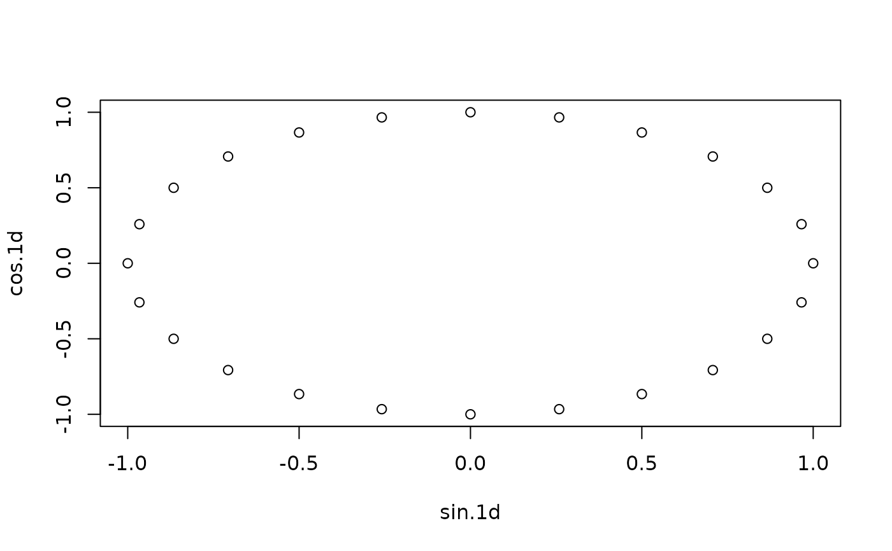

Encode a date-time object into a cyclic coordinate system in which the distances between two pairs of dates separated by the same time duration are the same.
cyclic_encoding( x, periods, encoders = c("sin", "cos"), week_start = getOption("lubridate.week.start", 7) )
Arguments
| x | a date-time object |
|---|---|
| periods | a character vector of periods. Follows same specification as period and floor_date functions. |
| encoders | names of functions to produce the encoding. Defaults to "sin" and "cos". Names of any predefined functions accepting a numeric input are allowed. |
| week_start | day starting a week (used for weekly periods). |
Value
a numeric matrix with number of columns equal length(periods) * length(types).
Details
Machine learning models don't know that December 31st and January 1st are
close in our human calendar sense. cyclic_encoding makes it obvious to the
machine learner that two calendar dates are close by mapping the dates onto
the circle.
Examples
times <- ymd_hms("2019-01-01 00:00:00") + hours(0:23) cyclic_encoding(times, c("day", "week", "month"))#> sin.day cos.day sin.week cos.week sin.month cos.month #> [1,] 0.000000e+00 1.000000e+00 0.9749279 -0.2225209 0.000000000 1.0000000 #> [2,] 2.588190e-01 9.659258e-01 0.9659258 -0.2588190 0.008445041 0.9999643 #> [3,] 5.000000e-01 8.660254e-01 0.9555728 -0.2947552 0.016889480 0.9998574 #> [4,] 7.071068e-01 7.071068e-01 0.9438833 -0.3302791 0.025332714 0.9996791 #> [5,] 8.660254e-01 5.000000e-01 0.9308737 -0.3653410 0.033774142 0.9994295 #> [6,] 9.659258e-01 2.588190e-01 0.9165623 -0.3998920 0.042213161 0.9991086 #> [7,] 1.000000e+00 -1.608123e-16 0.9009689 -0.4338837 0.050649169 0.9987165 #> [8,] 9.659258e-01 -2.588190e-01 0.8841154 -0.4672686 0.059081565 0.9982532 #> [9,] 8.660254e-01 -5.000000e-01 0.8660254 -0.5000000 0.067509747 0.9977186 #> [10,] 7.071068e-01 -7.071068e-01 0.8467242 -0.5320321 0.075933114 0.9971129 #> [11,] 5.000000e-01 -8.660254e-01 0.8262388 -0.5633201 0.084351066 0.9964361 #> [12,] 2.588190e-01 -9.659258e-01 0.8045978 -0.5938202 0.092763002 0.9956882 #> [13,] -3.216245e-16 -1.000000e+00 0.7818315 -0.6234898 0.101168322 0.9948693 #> [14,] -2.588190e-01 -9.659258e-01 0.7579717 -0.6522874 0.109566427 0.9939795 #> [15,] -5.000000e-01 -8.660254e-01 0.7330519 -0.6801727 0.117956717 0.9930187 #> [16,] -7.071068e-01 -7.071068e-01 0.7071068 -0.7071068 0.126338595 0.9919872 #> [17,] -8.660254e-01 -5.000000e-01 0.6801727 -0.7330519 0.134711462 0.9908849 #> [18,] -9.659258e-01 -2.588190e-01 0.6522874 -0.7579717 0.143074722 0.9897119 #> [19,] -1.000000e+00 -1.836970e-16 0.6234898 -0.7818315 0.151427778 0.9884683 #> [20,] -9.659258e-01 2.588190e-01 0.5938202 -0.8045978 0.159770033 0.9871543 #> [21,] -8.660254e-01 5.000000e-01 0.5633201 -0.8262388 0.168100894 0.9857698 #> [22,] -7.071068e-01 7.071068e-01 0.5320321 -0.8467242 0.176419766 0.9843150 #> [23,] -5.000000e-01 8.660254e-01 0.5000000 -0.8660254 0.184726056 0.9827901 #> [24,] -2.588190e-01 9.659258e-01 0.4672686 -0.8841154 0.193019171 0.9811950